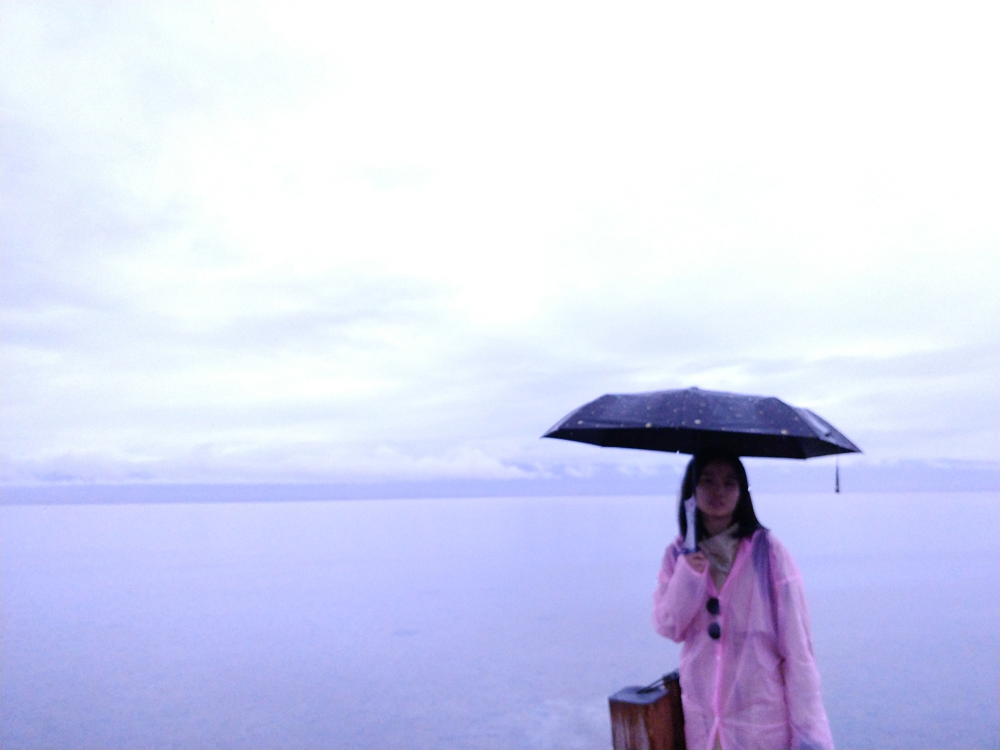

<!DOCTYPE html>
<html lang="en">
<head>
  <meta charset="UTF-8">
  <meta name="viewport" content="width=device-width, initial-scale=1.0">
  <meta http-equiv="X-UA-Compatible" content="ie=edge">
  <title>Document</title>
  <style>
    .container {
      margin: 100px 200px;
    }

    /* 平行四边形 */
    /* .btn{
        width: 150px;
        height: 40px;
        text-align: center;
        line-height: 40px;
        background-color: #fb3;

        transform: skew(-45deg);

        -moz-transform: skew(-45deg);
        -ms-transform: skew(-45deg);
        -webkit-transform: skew(-45deg);
    } */

    /* 下面介绍两种方向来实现平行四边形，且内容不会受影响。*/

    /* 第一种是比较常见的，嵌套一层结构，父元素进行斜切，子元素抵消掉斜切。 */
    /* .box{
        width: 150px;
        height: 40px;
        text-align: center;
        line-height: 40px;
        background-color: #fb3;

        transform: skew(-45deg);

        -moz-transform: skew(-45deg);
        -ms-transform: skew(-45deg);
        -webkit-transform: skew(-45deg);
    }
    .btn{
        transform: skew(45deg);

        -moz-transform: skew(45deg);
        -ms-transform: skew(45deg);
        -webkit-transform: skew(45deg); 
    } */

    /* 第二种方法是使用伪元素，将斜切背景应用在伪元素上 */
    /* .btn{
        position: relative;
        width: 150px;
        height: 40px;
        text-align: center;
        line-height: 40px;
    }
    .btn:after{
        position:absolute;
        content: '';
        width: 100%;
        height: 100%;
        top: 0;
        left: 0;
        background-color: #fb3;

        z-index: -1; /* 保证背景不会覆盖住文字 */

        /* transform: skew(-45deg);

        -moz-transform: skew(-45deg);
        -ms-transform: skew(-45deg);
        -webkit-transform: skew(-45deg); 
    } */

    /* 梯形 */
    /* .box {
        position: relative;
        width: 200px;
        height: 60px;
        line-height: 60px;
        text-align: center;
    }
    .box:after {
        position: absolute;
        content: '';
        top: 0;
        left: 0;
        right: 0;
        bottom: 0;
        z-index: -1;
        background-color: #fb3;

        transform-origin: bottom;
        -moz-transform-origin: bottom;
        -ms-transform-origin: bottom;
        -webkit-transform-origin: bottom;

        transform: perspective(20px) rotatex(5deg) scaley(1.3);

        -moz-transform: perspective(20px) rotatex(5deg) scaley(1.3);
        -ms-transform: perspective(20px) rotatex(5deg) scaley(1.3);
        -webkit-transform: perspective(20px) rotatex(5deg) scaley(1.3);
    }   */

    /* .box{
        width: 200px;
        height: 200px;
        border: 1px solid;
        overflow: hidden;

        /* transform: rotate(45deg);
        -mos-transform: rotate(45deg);
        -mz-transform: rotate(45deg);
        -webkit-transform: rotate(45deg); */

        /* clip-path: polygon(0 50%, 50% 0, 100% 50%, 50% 100%);
    }
    .box img{
        width: 100%;
    } */


    
    .box {
        width: 200px;
        height: 200px;
        background-color: #58a; /*hack 回退*/
        background: linear-gradient(225deg, transparent 20px, rgba(0, 0, 0, .7) 0), linear-gradient(225deg, transparent 20px, yellowgreen 0);
        background-size: 28px, 100%;
        background-repeat: no-repeat;
        background-position: right top, center;
    }

    .box{
        position: relative;
        background-color: #58a; /*hack 回退*/
        background: linear-gradient(-150deg, transparent 30px, yellowgreen 0);
    }

    .box:before {
        position: absolute;
        content: '';
        width: 62px;
        height: 34px;
        top: 0;
        right: 0;
        background: linear-gradient(-30deg, transparent 30px, rgba(0, 0, 0, .7) 0);
        transform: rotate(-120deg); 
   }


  </style>
</head>
<body>
  <div class="container">
    <!-- <div class="btn">Home</div> -->
    <!-- 父元素进行斜切，子元素抵消掉斜切 -->
    <!-- <div class="box">
        <div class="btn">home</div> 
    </div> -->


    <!-- <div class="box">home</div> -->


    <!-- <div class="box">
        
    </div> -->

    <div class="box"></div>
    


  </div>
</body>
</html>